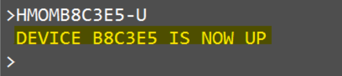

Pasos a seguir para comenzar a gestionar
Tenemos que loguearnos en Numintec y cambiar el estado de acuerdo a la tarea que tengamos
Desde el teléfono rojo vamos a ingresar a la pantalla para cambiar y guardar el nuevo estado


Abrimos nuestras herramientas de trabajo principales:
Gmail
FD
VPN
Admin
***Impresoras***
Para que nuestra administración pueda facturar todo lo emitido, deben recibir todos los tickets de cada gds a través de las impresoras instaladas.Se debe tomar como proceso diario el levantar las impresoras al inicio del dia y nuevamente a mitad del dia
En Amadeus, las impresoras se activan una sola vez. En Galileo, esas impresoras suelen caerse despues de unas horas y debemos reactivarlas
En cada ciudad/pseudo de Galileo tenemos asignadas determinadas impresoras
Los comandos que usamos para verificar son:
HQC: muestra el estado de archivos subidos y pendientes

HMLD: valida si las impresoras estan up
.png)
Simplemente al tirar el comando, figura que estan up.

Impresoras por dominio
Argentina
* Logueo inicial : HMLMB8C3E5DT/B8C3E6DI/B8C3E7DA* Primera: HMOMB8C3E5-U
* Segunda: HMOMB8C3E6-U
* Tercera: HMOMB8C3E7-U
Peru
* Logueo inicial: HMLMFE0D86DI / HMLMFE0CC1DA* Primera: HMOMFE0CC1-U
* Segunda: HMOMFE0D86-U
Chile
* Primera: HMOME707BE-U* Segunda: HMOMBCA91D-U
Mexico
* Logueo inicial : HMLM862404DT/862405DI/862406DA* Primera: HMOMB88FAB-U
*Ver estado: HMLMB88FABDA